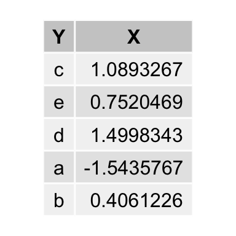

4 Working with data
Every analysis of data starts with preprocessing and parsing. The following chapter covers some packages that simplify working with data.
4.1 tidyverse
library(tidyverse)
data(iris)
head(iris) Sepal.Length Sepal.Width Petal.Length Petal.Width Species
1 5.1 3.5 1.4 0.2 setosa
2 4.9 3.0 1.4 0.2 setosa
3 4.7 3.2 1.3 0.2 setosa
4 4.6 3.1 1.5 0.2 setosa
5 5.0 3.6 1.4 0.2 setosa
6 5.4 3.9 1.7 0.4 setosadplyr::group_by(iris, Species) %>% dplyr::summarize(Petal.Length = mean(Petal.Length),
Sepal.Length = mean(Sepal.Length)) %>% dplyr::mutate(Species = toupper(Species)) %>%
head()# A tibble: 3 x 3
Species Petal.Length Sepal.Length
<chr> <dbl> <dbl>
1 SETOSA 1.46 5.01
2 VERSICOLOR 4.26 5.94
3 VIRGINICA 5.55 6.59tidyr::gather(iris, Col, Val, -Species) %>% head() Species Col Val
1 setosa Sepal.Length 5.1
2 setosa Sepal.Length 4.9
3 setosa Sepal.Length 4.7
4 setosa Sepal.Length 4.6
5 setosa Sepal.Length 5.0
6 setosa Sepal.Length 5.4TODO some examples
4.2 data.table
data.table is a fast implementation of R’s classical data.frame. I hardly ever use data frame any more, and if so only, because it seems to work nicer with dplyr and tidyr. However, by using dtplyr this isn’t much of a problem, really.
library(data.table)
library(dplyr)
library(dtplyr)
library(grid)
library(gridExtra)
n <- 1000
rn <- stats::rnorm(n)
ltrs <- base::sample(letters[1:5], n, replace = TRUE)
dt <- data.table::data.table(X = rn, Y = ltrs)
df <- base::data.frame(X = rn, Y = ltrs)
dt[, .SD[sample(.N, 1)], by = c("Y")] %>% tableGrob(rows = NULL) %>% grid.arrange
In the end it depends what style you prefer. I usually go with data.table alone without needing the dplyr/dtplyr dependency. However, the latter is usually more readable. For large data, the fastest solution is probably preferable.
dt.only <- function() dt[, .SD[sample(.N, 1)], by = c("Y")]
dt.dtplyr <- function() dt %>% dplyr::group_by(Y) %>% dplyr::sample_n(1)
df.dplyr <- function() df %>% dplyr::group_by(Y) %>% dplyr::sample_n(1)
microbenchmark::microbenchmark(dt.only(), dt.dtplyr(), df.dplyr())Unit: microseconds
expr min lq mean median uq max
dt.only() 1414.785 1586.2480 5779.886 1703.112 2298.637 68805.670
dt.dtplyr() 2124.899 2327.8425 41565.427 2641.847 8450.181 3576499.515
df.dplyr() 724.789 841.0025 1082.067 941.272 1057.872 7787.377
neval
100
100
1004.3 Data structures
If you have a background in computer science you may wonder, that R does not have support for advanced data structures such as Fibonacci heaps or hashmaps. datastructures tries to solve this. It uses Rcpp modules to export Boost data structures to R:
library(datastructures)
q <- datastructures::fibonacci_heap("integer")
q[1:3] <- list(rnorm(3), 2, rnorm(4))
datastructures::pop(q)$`1`
[1] -0.1297980 -0.7222048 0.8822356datastructures::pop(q)$`2`
[1] 2datastructures::pop(q)$`3`
[1] -0.9690185 0.5841185 -0.4897903 0.4729006datastructures::pop(q)NULLTODO examples
4.4 Databases
TODO neo4j, maria, sqltie, mongodb, dbplyr